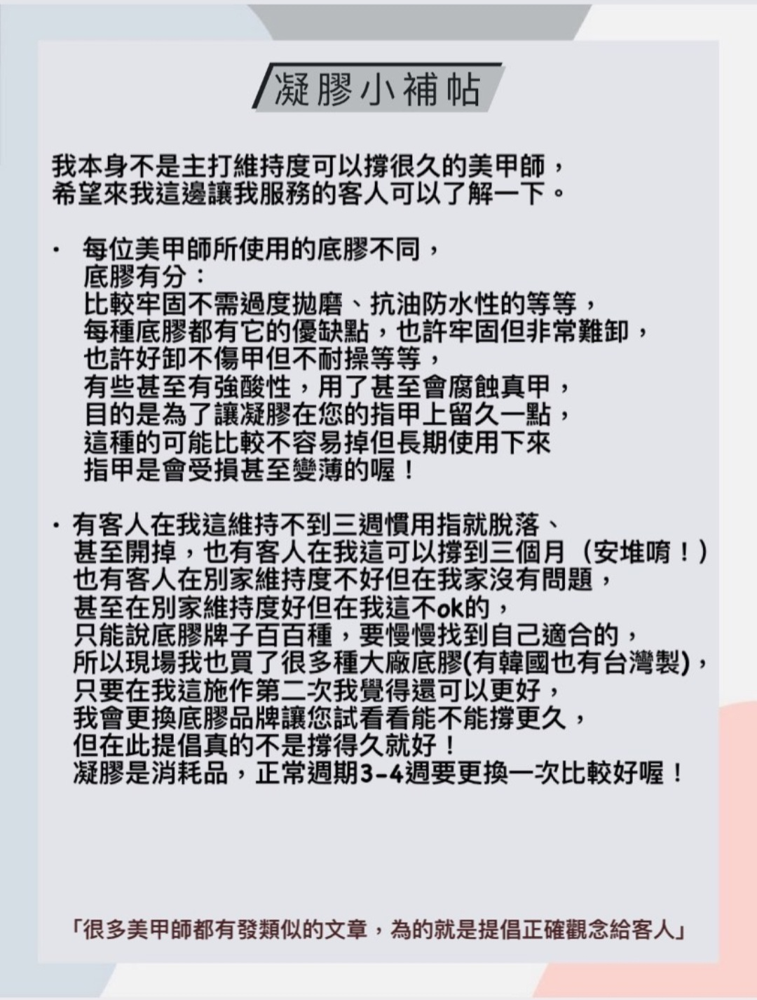

常見問題
我應該如何協助您?
凝膠注意事項
盡量避免用指尖做事(改用指腹) 特別是慣用手的食指 ,中指和大拇指
盡量避免摳標籤.敲鍵盤.開易開罐...等動作
凝膠本身不抗酸鹼 ,容易讓光療變霧 ,加上一般清潔劑對皮膚也不好 ,所以做家事時記得戴手套.
避免過度接觸水份 ,油份 ,和熱水 ,會導致凝膠容易剝離.
施作光療後手少泡水 .泡澡 .泡溫泉和過度擦拭指緣油
洗澡完後需特別注意,此時做凝膠的真甲變軟,若太用力撞擊或一直用指甲做事,很容易造成凝膠指甲斷裂或折損使維持度變差.
碰完熱水後.等真甲恢復硬度後再做事.
避免咬甲,摳甲,按壓真甲前端.不然維持度一定會降低的.
若邊邊或前端已經有掀起還沒辦法回來卸除. 請將分離處用小剪刀先剪掉.未分離處切記勿用手撕除.避免造成真甲受傷
發現跑空氣又還沒到卸甲時間?有沒有可以自己先做的簡單保護避免發霉的方法?
如果是做透色的
發現裡面反白就是進空氣了,可以用吹風機稍微吹一下甲面減少水氣
如果是靠近指緣開掉
可以用棉花棒吸乾水份或用甲片膠(快乾)
*暫時*
黏合,這樣也可以避免凹折
如果是剛做不久
1.凝膠開了就趕快去補或卸掉
絕對不能摳掉!!! 保證你指甲爛到變紙片
2.如果以做3-4週以上開了也很正常 如果沒開.也乖乖去卸甲吧!
